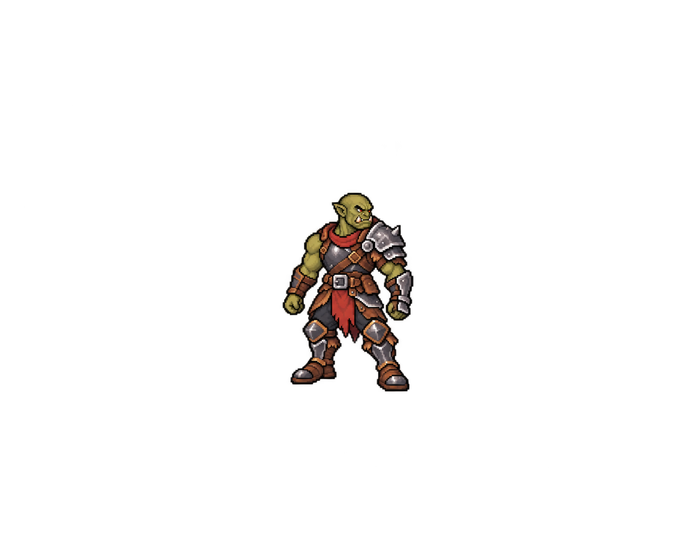
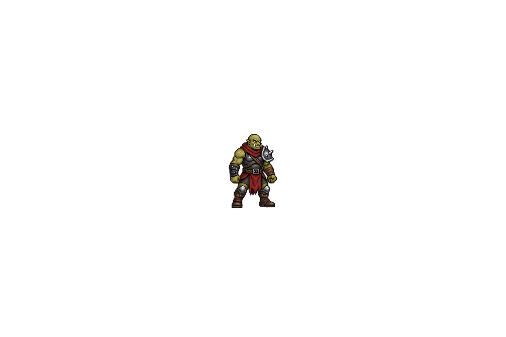

Orc Warrior — 0/97 PNGs de produção
Conceito 07 aprovado. As três tentativas abaixo foram rejeitadas; não são sprites de produção. PNGs originais preservados sem reescala.
 Conceito 07 aprovado
Conceito 07 aprovado Tentativa 01: canvas 1254×1254
Tentativa 01: canvas 1254×1254
Tentativa 02: 1420×1108; desenho excede recorte 128×128
Tentativa 03: 1536×1024; escala inválida, halo e armadura divergenteInventário técnico completo